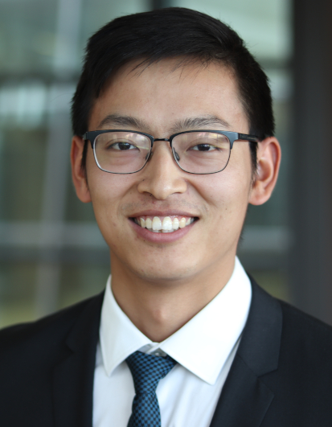

Postdoctoral Researcher
Institute of Electrical Machines (IEM)
RWTH Aachen University, Germany
Electrical Machines · High-Frequency Modeling · Insulation Systems · Condition Monitoring · Electric Aviation · AI-enabled Health Management

I am currently a Postdoctoral Researcher at the Institute of Electrical Machines (IEM), RWTH Aachen University, Germany.
My research interests include electrical machines, high-frequency modeling, insulation systems, condition monitoring, prognostics and health management, and electric aviation propulsion systems.
I received my Ph.D. degree from RWTH Aachen University in 2022 and have authored more than 15 journal publications. My work has been carried out in collaboration with industrial partners including Toyota Motor Europe, Siemens, TotalEnergies and ebm-papst.
My research focuses on the design, modeling, monitoring and lifetime prediction of electrical energy conversion systems. The goal is to bridge physics-based modeling and data-driven methods for next-generation intelligent electrified systems.
Design, modeling, optimization, and analysis of electrical machines and drive systems.
White-box and grey-box modeling of machines, cables, and drive systems for EMC and overvoltage analysis.
Aging mechanisms, partial discharge, lifetime prediction, and reliability of machine insulation systems.
Online monitoring, fault diagnosis, digital twins, and machine-learning-based prognostics.
High-power-density electric propulsion systems and health-aware design for future aircraft.
For a complete and continuously updated publication list, please visit my Google Scholar profile.
Research metrics: 15+ journal publications · 2 patents · 50+ supervised theses · industrial collaborations with Toyota Motor Europe, Siemens, TotalEnergies and ebm-papst.
High-frequency modeling of PMSMs for electric vehicle applications.
Energy management and simulation design for hydrogen fuel-cell hybrid railway systems.
Compatibility studies of lubricants, coolants, and electrical insulation systems.
Modeling of ferromagnetic materials under machining-induced residual stress.
Dr.-Ing. Hujun Peng
Institute of Electrical Machines, RWTH Aachen University
Aachen, Germany
Email: hujun.peng@iem.rwth-aachen.de